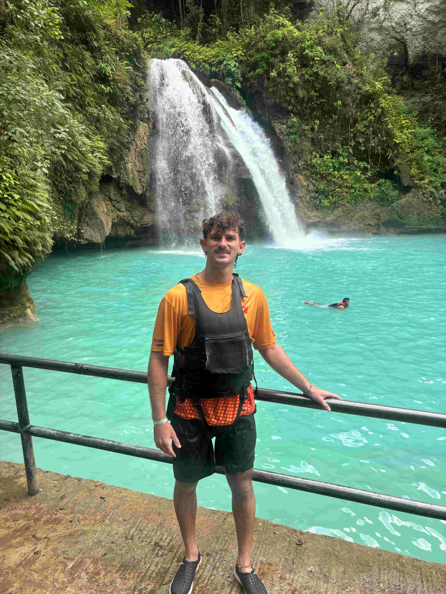
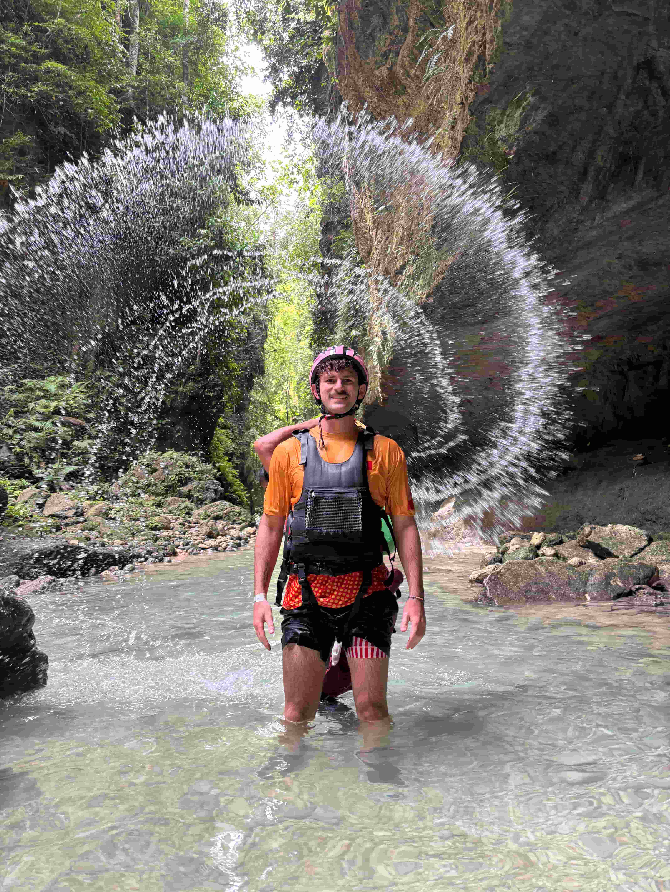
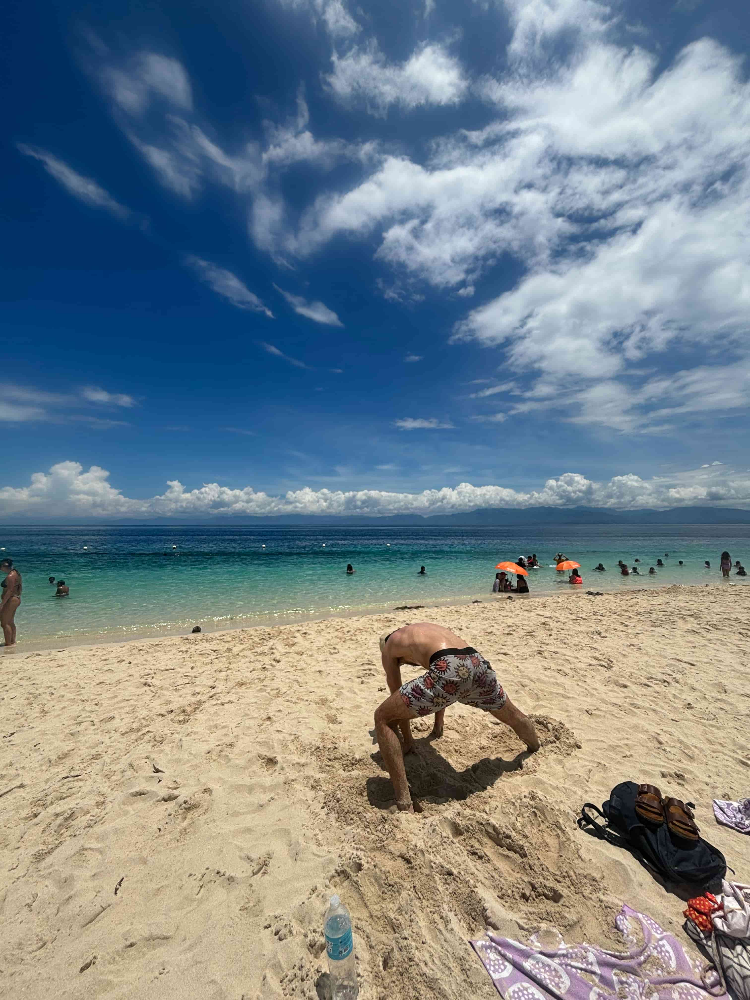
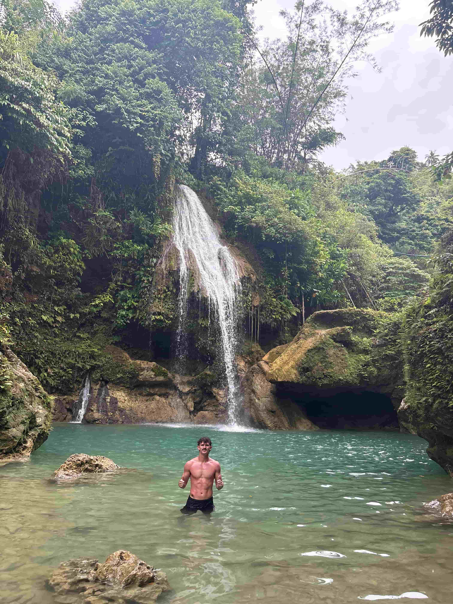

Wednesday, May 7th, Siquijor, Phillipines
Motorbike from Moalboal to the bus station, bus to the port near Cebu, tuk-tuk to the port itself, ferry to Dumaguete, tuk-tuk to the port near Dumaguete, ferry to Siquijor, and motorbike to my accommodation in Siquijor.
A long travel day, but all things considered, it was smooth, painless, and cheap. I’m on a new island now—Siquijor—and I’m looking forward to adventuring around it!
Yesterday, I went canyoneering in Kawasan Falls, which was one of the coolest experiences of my entire trip. I hiked, swam, and jumped through the canyon. The nature was stunning, the water was turquoise blue, and the guides were energetic and fun.
This morning, as I was leaving my accommodation in Moalboal, I met the property owner, Charles—a 50-something-year-old guy from New York. He’s dating a Filipina woman, who I’d guess is in her early 30s and runs the property. They were both incredibly sweet and went above and beyond to make my stay enjoyable.
Charles bought the property in March and has big plans to expand it. He told me he wants to buy three neighboring properties and build pickleball courts. It’s cool to see an American adventure capitalist on the ground. He was very down-to-earth and kind. Back in the U.S., where he still spends most of his time, he runs a foreclosure business—buying homes at auction and flipping them.
I told him I’m interested in international business and would love to learn from him. He mentioned that in Rochester, NY, three-bedroom, two-bath homes go for under $100k and are solid investments. Foreclosure investments seem like a great business model—definitely something I’ll remember. In the Philippines, he paid for his property in cash and then refinanced, a common technique for large investments to maximize value and deals.
Talking with Charles and his girlfriend made me reflect on the wide variety of relationships that exist in the world. To a Western mind, their relationship—an older, wealthy American with a younger Filipina partner—might seem unusual. But it seems mutually beneficial. As you get older, I think the nature of relationships evolves. Charles gains a caring and capable business partner, while his girlfriend gains financial stability. As long as it’s a fair exchange, I don’t see a problem with these kinds of relationships—especially in developing countries where financial opportunity can be life-changing.
Thinking about their relationship got me reflecting more deeply on love, marriage, and connection. I believe that relationships—especially marriage—should be shared with someone who enhances your life, your experiences, and yourself. Sadly, many relationships, particularly in the West, lack this foundation, and people end up miserable.
While I’ve loved traveling solo and thrive as a lone wolf, I’ve come to appreciate the power of sharing experiences with others. It really can elevate everything about your journey.
I’m excited to explore more of Siquijor!


Monday, May 5th, Moalboal, Phillipines
Okay, enough of the history recap—let’s get real. I’m going to take you on a journey through the current state of my internal dialogue.
Ever since I hit a dog and crashed my bike, I’ve felt exhausted. It’s true: when your body is healing, the immune system is active—sending cells to repair tissue and prevent infection—which uses up a lot of energy. Inflammation releases chemicals like cytokines, which can make you feel fatigued or sluggish. Tissue regeneration and rebuilding require increased protein synthesis and cell activity, which also draw on your body's resources.
I hate feeling exhausted and tired. Being energized, I’ve realized, is one of the most important things you can do for yourself as a human. If you're not energized, you can’t give to others, crack jokes, or train your mind and body.
I’m incredibly grateful that quitting my job and leaving the U.S. for 7.5 months gave me the space to figure out what truly energizes me. The bike accident made me double down on its importance.
One of the biggest factors that keeps me energized is sunlight. I like places with temperate, sunny climates. They make me feel more active and more connected to my surroundings. I’ve learned I’m not a city person—I prefer the seclusion of nature and smaller villages. I’ve realized the value of eating fresh fruits and local foods. Lactose and gluten make me feel sluggish, while fish makes me feel the most alive and energized.
Of course, you don’t have to quit your job and travel the world to figure all this out. But when you do, you gain the freedom and time to experiment and observe what works for you.
Working out in the morning and doing challenging things keeps me energized—especially through sports.
So now we understand the importance of staying energized throughout the day. As I’ve said before, this trip is a hero’s journey. There’s a rising action, a climax, and a falling action. I liken it to setting sail on an expedition in the 16th century, searching for unknown lands.
The first three months were about unraveling my old self and letting go of the corporate life and values I’d built around myself. The next three months, I got lost in the middle of the deep blue sea—doing some of the most adventurous things I never imagined I’d do. I hunted with a tribe in Africa, where I bit a bird’s neck. I trekked through the Himalayas for a week and a half. I volunteered on a farm in Laos. I rode a motorbike halfway through Vietnam.
These crazy adventures are incredibly rewarding—but also incredibly exhausting.
After the 4,000+ km bike ride through Vietnam, staying in wild homestays with local indigenous people and eating whatever was offered, I now feel my ship slowly steering toward shore. The accident—and the forced slowdown—made me reflect on what I want out of the rest of this trip.
I’ve had so many wild experiences already. What’s next?
Now, I want to incorporate the habits that will keep me energized long-term—before I return home to all the external forces that push and pull you in every direction. That means working out, eating cleaner, reading, writing, reigniting my intellect, and using my phone less. These micro-habits need to be cemented in the next couple of months.
In the Philippines, I plan to chill hard—but maybe I’ll still find the energy for one more adventure. I really want to learn how to surf. I’d also love to practice Spanish in a foreign country.
I’ve come to realize: this adventure is never going to leave me. I don’t see myself returning to America to work an in-person job ever again (hopefully—unless I’m forced to). I want to continue creating an international lifestyle.
Now, for the first time in human history, you can make a living and earn money from a laptop. That gives you ultimate freedom and flexibility to live anywhere you want.
I don’t want to plan too far ahead. I want to preserve spontaneity. I think the best approach is to point your ship in a direction and see where the waves take you—rather than trying to force a specific course.
After all, the best laid plans of mice and men often go awry.


Saturday, May 3rd, Moalboal, Phillipines
After a successful 36 hours in Singapore, it’s back to the developing world. I arrived in Cebu, Philippines early this morning and slept the whole way on the direct flight from Singapore.
Before diving into what’s in store here in the Philippines, here are a few takeaways from my time in Singapore. Based on first impressions, I thought I was really going to like it. But in the end, it felt kind of bland. The city lacked energy. It’s a uniquely chill and efficient place to live, but it doesn’t really ignite anything in you. Between the two small, futuristic city-states, I’d take Dubai over Singapore. Dubai has more vibrancy, more ambition, and just feels more alive. Singapore markets itself with bold claims about wild architecture and sustainability—some of that is there, but it wasn’t as striking or overwhelming as I expected.
Now onto the Philippines—this place is wildly different.
The Philippines is a country of over 7,000 islands, with deep Spanish roots that continue to shape its culture today. One of the most noticeable influences is religion: the Philippines is the most predominantly Christian country in Asia. Around 79% of the population identifies as Roman Catholic, a direct legacy of Spanish colonial rule.
Spanish influence began in 1521 when Portuguese explorer Ferdinand Magellan—sailing under the Spanish crown—arrived in the Philippines. His arrival marked the beginning of European interest in the islands. Magellan was killed shortly after landing, during the Battle of Mactan, right here in Cebu, by the local chieftain Lapu-Lapu, who is now celebrated as a national hero. Despite Magellan’s death, Spain returned and successfully colonized the archipelago in the late 1500s. Spanish rule lasted for over 300 years, until 1898, when the U.S. took control following the Spanish-American War.
That long colonial period left a deep imprint on everything—from town names and food to language and religion. Catholic festivals, Spanish surnames, and colonial churches are everywhere. Even today, walking around parts of the Philippines can feel like stepping into a hybrid of Latin American and Southeast Asian culture.
Thursday, May 1st, Singapore, Singapore
Travel day to Singapore! I arrived in Singapore this afternoon safely and smoothly.
Let’s recap the history and current state of the rich city-state before my two-night exploration here! Once a humble Malay fishing village known as Temasek, Singapore’s transformation began in 1819 when Sir Stamford Raffles of the British East India Company established it as a strategic free port, quickly turning the island into a vital hub for global trade.
Through the 19th and early 20th centuries, it flourished under British colonial rule until it faced Japanese occupation during World War II, a traumatic chapter that lasted from 1942 to 1945. After the war, Singapore moved toward self-governance in 1959 and briefly joined Malaysia in 1963, only to be expelled two years later, forcing the fledgling nation into sudden independence in 1965. What followed was one of the most remarkable development stories of the modern world: under the leadership of Lee Kuan Yew, Singapore built a highly efficient, corruption-free government, emphasized education and urban planning, and opened its doors to foreign investment, becoming a global powerhouse in finance, technology, and shipping despite having almost no natural resources. Today, Singapore is a tightly woven fabric of cultures, shaped by its rich ethnic mosaic made up of roughly 75% Chinese, 15% Malay, 7% Indian, and a remaining 3% comprising Eurasians and other minority groups. This diversity is reflected in everything from its cuisine and architecture to its festivals and neighborhoods, with English as the main working language alongside widespread use of Mandarin, Malay, Tamil, and the colorful local slang known as Singlish. After the flight I took the clean and efficient public transport about 30 minutes to my hostel in Little India. The crazy thing about Singapore is how expensive it is—hostel beds in an 18-person dorm room are over 40 dollars a night! This high cost of living is part of Singapore’s broader economic story: despite its small size and lack of natural resources, it has become one of the world’s richest countries thanks to strategic planning, pro-business policies, and an emphasis on global trade and finance. Its GDP stands at over $500 billion USD, with a GDP per capita of around $85,000, making it one of the wealthiest nations globally. Singapore’s key exports include electronics, pharmaceuticals, petroleum products, and financial services, and it's home to one of the busiest ports and airports in the world. My first impressions of Singapore are overwhelmingly positive—it’s instantly likable and captivating. The country is a fascinating fusion of some of my favorite cultural influences—Asian and Indian—wrapped in a sleek, ultra-modern, and first-world presentation. It is immaculately clean, feels incredibly safe, and signs warning of hefty fines for everything from littering to fighting are posted everywhere, reinforcing its reputation for strict order. In Little India, the streets pulse with life: rows of electronic shops, barbershops, clothing stalls, and clusters of young men chatting in Tamil give the area the feel of southern India transplanted into the heart of Southeast Asia. One thing I realized is that for a country to succeed, it must find a way to attract and retain global capital—both the wealthy and the financial institutions that support them. Singapore is a masterclass in this strategy: its low corporate tax rates (around 17%), lack of capital gains tax, robust legal protections, political stability, and streamlined regulations have made it a magnet for multinational banks, investment firms, and high-net-worth individuals. This is a model that countries like Vietnam—despite their growing economic momentum—should look to emulate if they want to elevate themselves further on the world stage. After settling in, I looked up the famous hawker center in Little India for cheap, authentic Indian food. I had really good mutton biryani—tender, spicy, and deeply flavorful. Hawker centers are a uniquely Singaporean institution: open-air food courts packed with individual vendors, or “hawkers,” who specialize in just one or two dishes perfected over years or even generations. They’re an affordable, communal way for locals and tourists alike to enjoy the city’s multicultural cuisine, and many stalls have even earned Michelin recognition. After a satisfying dinner, I walked back to the hostel to get a good night’s rest before a long and action-packed day tomorrow.